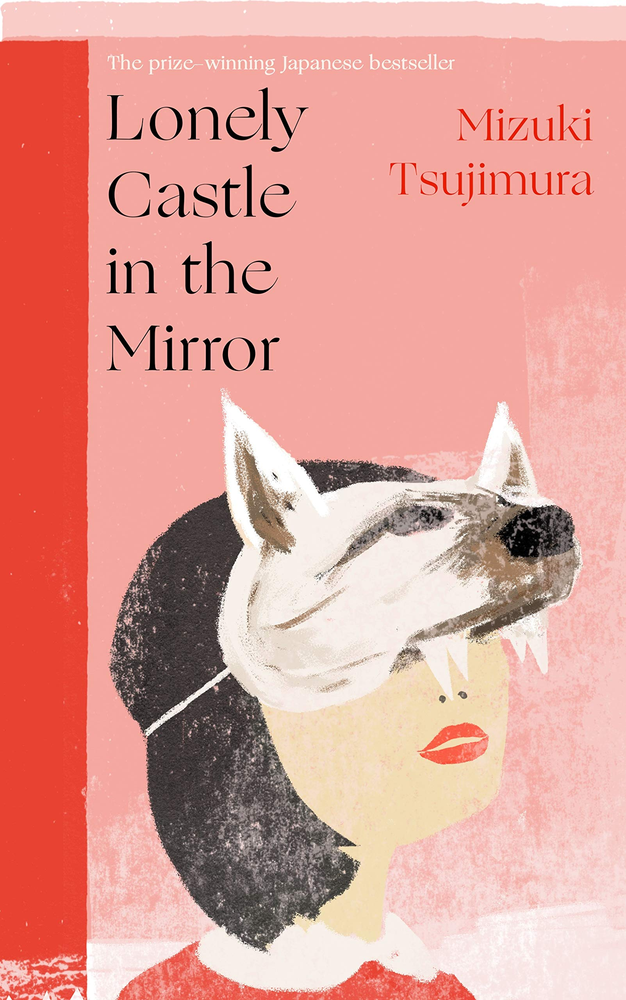

Paper Crane Pages

Surrealism
Surrealism is a literary movement that dives beneath the surface of reality, drawing from the subconscious and the unexpected (Oxford Reference). Stories in this genre often defy logic, blending strange imagery and irrational events in ways that feel both disorienting and oddly profound. By freeing the imagination from the constraints of reason, surrealist literature opens up new ways of seeing the world—where the ordinary becomes strange, and the strange feels deeply familiar.
Lonely Castle in the Mirror
Written by Mizuki Tsujimura
Synopsis
Seven teenagers, each struggling with the pressures of school and life, retreat into the isolation of their darkened rooms—unwilling to face the outside world. That is, until they stumble upon a mysterious portal hidden inside a mirror and on the other side lies a grand castle, a safe haven they can visit during school hours. Inside the castle, they are given a mission to find a hidden key. The one who finds it will be granted a single wish. But there’s a catch—when the wish is made, the castle will disappear, and all memories of their time there will be erased. Lonely Castle in the Mirror gently unravels each character’s emotional struggles, highlighting the quiet power of connection, empathy, and courage. With a plot that feels both magical and intimate, the story offers hope to anyone who’s ever felt alone or misunderstood(Good Reads).
